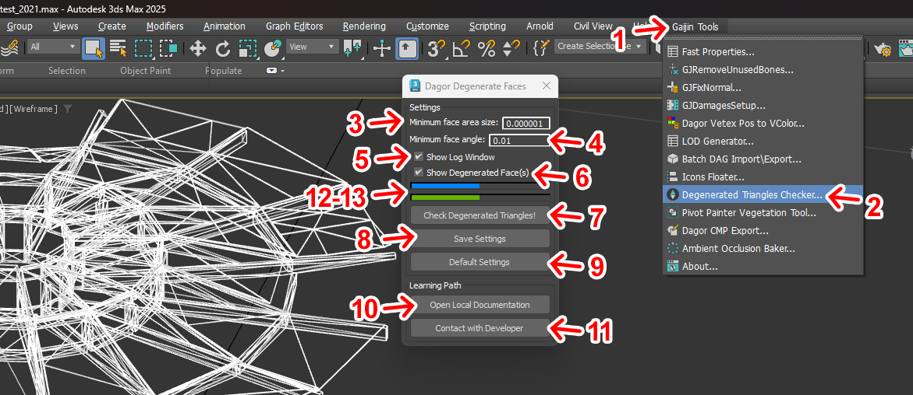

Dagor Check Degenerated Faces Tool
Installation
Install the script following the provided instructions.
3ds Max Version Requirement
This script requires 3ds Max 2014 or later.
Overview
This tool is designed to identify degenerate triangles in a scene by evaluating two key criteria: the minimum area of triangles and the minimum angle within triangles.
Example of the tool’s output:
Accessing Check Degenerated Faces Tool
Navigate to Gaijin Tools 1 > Degenerated Triangles Checker…. This will open the Error Log window.
To verify the version 3 of the script, go to Gaijin Tools 1 > About 2. The About window will display the current version. It’s important to check this regularly to ensure your script is up to date.
Plugin Version Requirement
Requires plugin version 1.7 or higher.
{kind=link}
Using Check Degenerated Faces Tool
To get started, download the following test scene:
degenerated_triangles_test_2021.max.
3ds Max Version Requirement
This scene requires 3ds Max 2021 or later.
Open the script by navigating to the menu 1 and selecting the script option 2.
{kind=link}
The script window will appear with several key options:
Minimum face area size 3: specifies the minimum area of triangles to be considered degenerate. The value is based on the current scene units (e.g., meters, inches).
Minimum face angle 4: sets the minimum angle for triangle evaluation. If any angle within a triangle is smaller than this value, the triangle will be marked as degenerate. The default values in these fields are typically optimal for scenes imported from a
.dagfile, as the correct size and scale are automatically set.Show Log Window 5: enables a log that lists all objects and any degenerate triangles found.
Show Degenerated Face(s) 6: automatically adds a new modifier to all objects checked for degenerate triangles, highlighting the problematic areas for easy identification.
Check Degenerated Triangles! 7: initiates the check process.
Save Settings 8: saves the current script settings.
Default Settings 9: loads the default settings.
Open Local Documentation 10: links to this documentation.
Contact with Developer 11: provides contact information for the developer if assistance is needed.
Progress Bar Blue 12: displays the overall progress.
Progress Bar Green 13: shows the progress for the currently selected object.
Running Test
To test the loaded scene, select an object and press the start button 7. For example, if you select a simple object, the results will appear quickly:
{kind=link}
As shown in the log, the object stalingrad_water_tower_roof_lod01_col_tra_wood
1 contains 20 degenerate triangles 2. These problematic
triangles are highlighted in the Viewport 3 using the modifier
4. If you need to revert the scene to its original state, simply remove
the added modifier from the highlighted objects.
Note
On average, the tool processes around 1,000 triangles in about two seconds, so larger objects or scenes may take longer.